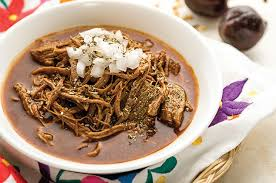

15.Jalisco

- Platillo: Birria de res o chivo
- Ingredientes: Carne (res o chivo), chiles secos, vinagre, especias, hojas de laurel.
- Historia: Se originó durante la colonia como forma de cocinar carne de cabra salvaje.
- Dato curioso: Tradicionalmente se cocina en horno de tierra y se acompaña con consomé y tortillas.